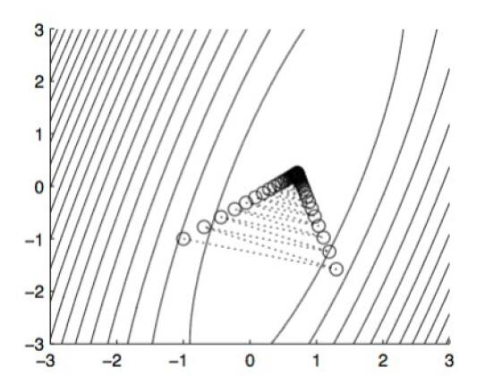

# 优化问题和方法
# 优化问题
寻找某个函数 f(x) 的最值的过程称为优化 (optimization). 寻找最小值和最大值可以相互转化。例如，寻找 f(x) 的最大值可以转化为寻找 −f(x) 的最小值。因此，我们一般认为优化问题是寻找函数最小值的问题。
此外，我们一般认为我们待求的问题不具有简单的数学求解方法，因此最优解需要通过迭代方式产生。
# 目标函数
我们将要求最值的函数 f(x) 称为目标函数 (objective function) 或准则 (criterion). 将其最小化时，我们也常直接称 f(x) 为代价函数 (cost function) 或损失函数 (loss function).
目标函数 f(x) 可以是连续的，也可以是离散的。对于不同可微性、不同凸性的目标函数，常常采用不同的优化方法。但在这里，我们主要讨论对多元可微凸函数的优化。
# 优化方法
优化方法大致可以分为两类：确定性优化 (deterministic optimization) 和随机性优化 (stochastic optimization). 确定性优化方法中不会引入随机过程，每一步得到的结果在多次实验中都是唯一的，随机性优化则不然。梯度下降算法和牛顿法是最基本的确定性优化方法。其中，梯度下降算法只采用梯度进行优化，属于一阶优化，而牛顿法还采用 Hessian 矩阵优化，属于二阶优化方法。
# 梯度下降算法
# 基本概念
# 梯度
对于函数f(x)，衡量在点x 处的xi 方向f(x) 如何变化的量是f(x) 在xi 方向上的偏导数，即∂xi∂f(x)。我们定义梯度
∇xf(x):=(∂x1∂f(x),∂x2∂f(x),…,∂xn∂f(x))=i=1∑n∂xi∂f(x)xi
# 方向导数
我们定义向量u 方向上的方向导数 (directional derivative) 为∂α∂f(x+αu)。于是根据梯度的定义，有∂α∂f(x+αu)=u†∇xf(x)。
# 梯度下降算法简单推导
我们假设f 是一个恒正的函数。为快速寻找f 在定义域上的最小值，对一个初始点x，我们希望找到x 处使f 下降最快的方向，即寻找
u,∣u∣=1minu†∇xf(x).
我们有
u,∣u∣=1minu†∇xf(x)=u,∥u∥=1min∥∇xf(x)∥2cosθ,
其中θ 是u 与∇xf(x) 的夹角。
显然，u 与∇xf(x) 反向时，该值最小。于是我们只需计算函数f 在点x 处的梯度，在负梯度上移动可以最快达到最小值。这种方法被称为梯度下降算法 (gradient descent)。
根据梯度下降算法，我们每次迭代得到的新的点为
x′=x−α∇xf(x)
，其中α 称为学习率 (learning rate) 或步长。上式称为更新方程。当算法迭代至一定次数后，有∇xf(x)→0，此时我们取一个临界值，当∇xf(x) 小于临界值时，认为算法结束。
# 梯度下降算法的问题和优化
这部分内容不仅是梯度下降算法存在的问题，也是诸多迭代优化算法中需要面对的问题。其解决思路也与梯度下降算法相似。
# 大样本下的效率问题
面对大规模的样本，仍然采用朴素的梯度下降方法会存在两个问题，一是训练样本无法完全装入内存，二是单次训练所需时间过长。
# 随机梯度下降
为了解决大样本下的训练效率问题，随机梯度下降 (Stochastic Gradient Decent, SGD) 采用在样本中再次随机取样的方式进行训练。SGD 的一个改进为 mini-batch SGD, 即小批量随机梯度下降。其每次在样本中随机选择一定数量的样本作为一个批次 (batch), 执行一次梯度更新。
mini-batch SGD 算法包括以下步骤 (朴素 SGD 只需要取 m=1)：
- 从训练集中随机选出 m 项 {x(1),x(2),…,x(n)}, 及其对应标签 y(i).
- 求梯度
g^←+m1∇θi∑L(f(x(i);θ),θ,y(i))
- 更新解
θ←θ−αg^
- 判断是否满足停机条件，否则跳回 1.
注意到，由于单次只选取一个样本，造成 SGD 的一个缺点是容易陷入局部最优解。
# 训练速度和精度问题
先前介绍的朴素梯度下降算法和 SGD 中，学习率都是一个确定的超参数。学习率的优劣，会极大程度上影响训练的速度和精度。学习率过低时，梯度下降过程缓慢，需要的迭代次数较多，但最终可以到达的最优解较精确；学习率过高时，尽管训练速度快，但在接近最优解时会出现较强的震荡现象，(我们称为 zig-zagging 问题) 得到的最优解不精确。
面对这种情况，目前主要的解决思路有两种。分别是基于动量的梯度下降和自适应学习率的梯度下降。

# 动量梯度下降法
经典的动量梯度下降法 (Polyak's Classical Momentum) 由 Polyak 于 1964 年提出。动量梯度下降的更新方程如下：
θt+1=θt+vt+1vt+1=μvt−η∇θtf
也就是说，其以速度矢量 (velocity vector) v 取代了更新所用的梯度。速度矢量包含了对先前梯度的记忆，记忆是指数衰减的，其衰减系数 μ∈[0,1].
# Nesterov Accelerated Gradient (NAG) 算法
是 Polyak 的经典动量梯度方法的改进，于 1981 年提出，其思想类似数值分析中的 Runge-Kutta 方法，采用计算提前量的方式使估计更精细。其具体的更新规则如下：
θt+1=θt+vt+1vt+1=μvt−η∇θt+μvtf
# AdaGrad
除了采用动量梯度下降的方式外，另一种调整方式是实现自适应的学习率调整。AdaGrad (Adaptive Gradient Algorithm, 2011) 是其中最基础的一种方式。其核心是采用累积梯度平方实现各参数学习率的自适应下降。其更新方程为：
gt=∇θtfGt=τ=1∑tgτgτ⊤θt+1,i=θt,i−Gt,ii+εηgt,i
其中， i 为参数下标， t 为更新步数 (time)， Gt 是 t 时刻对全体更新过程的梯度外积求和得到的矩阵，对角元素表示对应参数分量的全过程梯度平方和。
这样做存在的一个缺点是，训练后期的 Gt 较大，更新步长太小，导致模型的收敛速度慢。
# RMSProp
均方根传播算法 (Root Mean Square Propagation, RMSProp) 也是一种对每个参数自适应学习率的梯度下降算法。其结合了动量梯度下降和 AdaGrad 算法的思想，更新方程如下：
gt=∇θtfGt=gtgt⊤vt+1,i=γvt,i+(1−γ)Gt,iiθt+1,i=θt,i−vt,i+εηgt,i
# Adam
# Reference